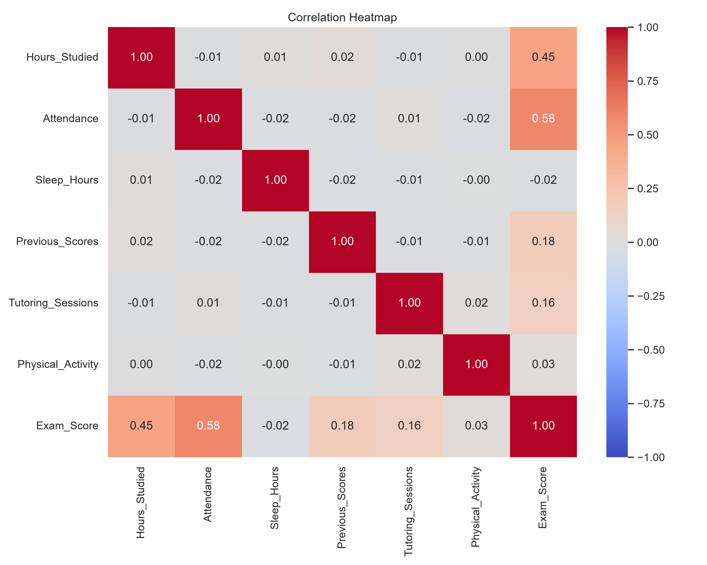
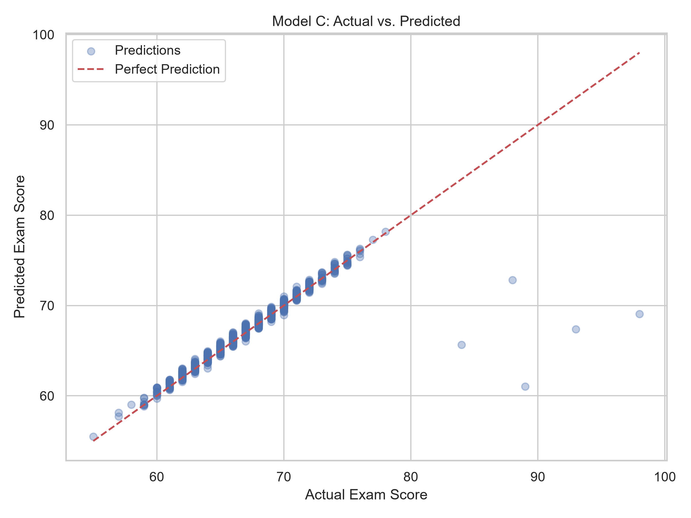
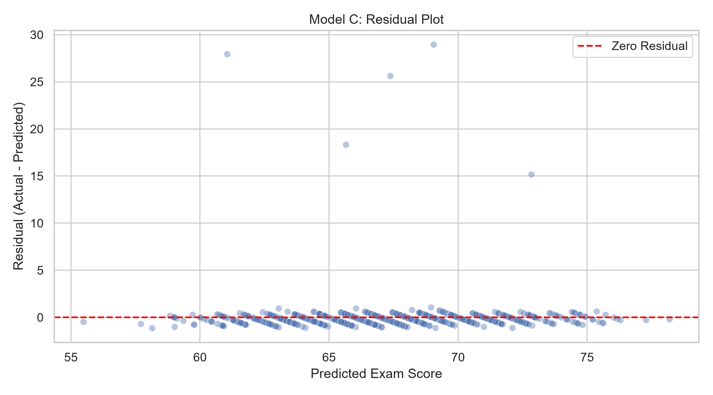
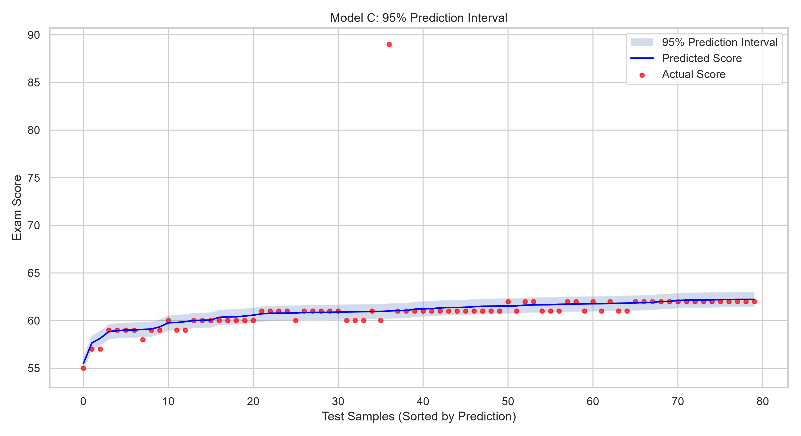

Business
Understanding
定義成績預測目標與模型比較問題。
IoT · HW2 · CRISP-DM
從 6,607 筆學生資料出發，以多元線性回歸與 RFE 特徵選擇，把「感覺重要」轉化成可驗證的預測證據。
Research map
研究以 Exam_Score 為預測目標，比較單純線性回歸、完整多元線性回歸，以及經 RFE 篩選後的多元線性回歸。所有前處理與特徵選擇只在訓練資料上擬合，降低資料洩漏風險。
核心問題：加入學習環境、家庭背景與個人行為等特徵，能否比單用讀書時間更準確地預測成績？
定義成績預測目標與模型比較問題。
檢查 20 欄資料、缺失值、分布與相關性。
清理異常值、填補缺失、標準化與 One-Hot 編碼。
建立 Simple、Multiple 與 RFE 三種線性模型。
以 MAE、RMSE、R²、殘差與預測區間驗證。
保存模型，並以本網站呈現完整分析成果。
Data understanding

Attendance 與成績的相關性最高；高於讀書時間的 0.45。
平均考試成績，多數樣本集中在約 60–75 分。
相關不等於因果。此資料集為合成資料，結論僅用於方法教學與模型驗證。
Model evaluation
Model C 以 25 個編碼後特徵達到最佳測試表現；相較完整模型減少 2 個特徵，預測能力幾乎不變。



Interactive regression lab
選擇內建問題，或貼上任何可公開存取的 CSV 網址。運算完全在瀏覽器內完成，資料不會上傳到伺服器。
GPT 輔助內容
GPT 協助整理 CRISP-DM 報告架構、檢查資料前處理流程、說明 RFE 與 Split Conformal Prediction，並協助將 Notebook 分析結果轉化為可閱讀、可互動的網頁。模型數值仍以 Notebook 實際執行輸出為準。
NotebookLM 摘要
根據 NotebookLM 整理的相關文獻，學生成績預測常使用 Random Forest、XGBoost 與 LightGBM 等集成學習方法，以捕捉非線性關係及特徵交互作用；但這類模型通常也需要額外的解釋技術。本研究採用結構較透明的多元線性回歸，搭配 RFE 減少特徵數量。結果顯示 RFE 模型以較少特徵維持與完整模型近乎相同的效能。不過，由於資料切分、前處理與實驗設定不同，不能直接宣稱線性模型優於其他方法；若應用於真實教育資料，仍須在相同條件下比較泛化能力。